البوابات
دليل أعضاء هيئة التدريس
67 عضو هيئة تدريس مدرجين في صفحات الكليات الأربع — ابحث بالاسم أو التخصص أو البريد.
67 نتيجة
- د. مصطفى عكليالقائم بأعمال عميد كلية الدراسات الإسلاميةكلية الدراسات الإسلامية
- د. وديمة الظاهريأستاذ مشارك- قسم الدراسات الإسلامية والدراسات العلياكلية الدراسات الإسلامية
- أ.د. زياد السلامينعميد كلية العلوم الاجتماعية والإنسانيةكلية العلوم الاجتماعية والإنسانية
- د.فاطمة الدهمانيرئيس قسم التسامح والتعايشكلية العلوم الاجتماعية والإنسانية
- أ.د.إبراهيم بورشاشنرئيس مركز الفلسفة بالإنابةكلية العلوم الاجتماعية والإنسانية
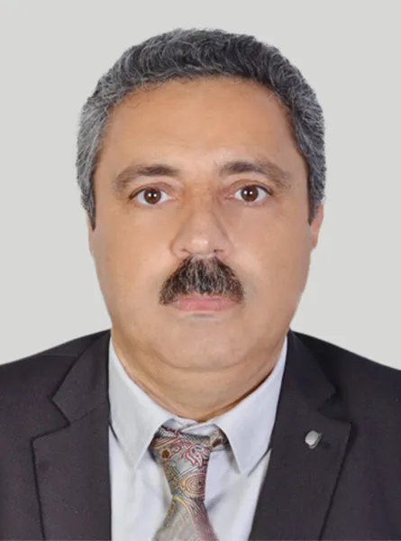
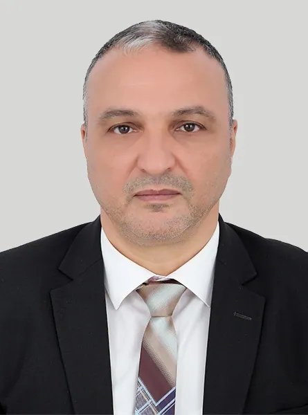
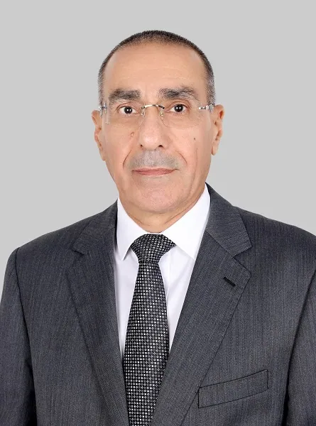
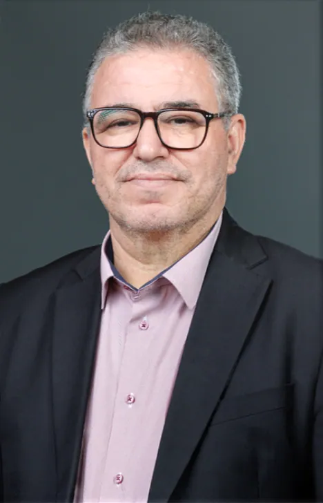
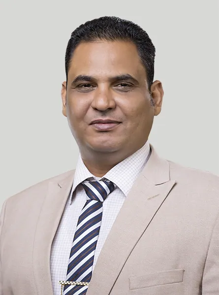
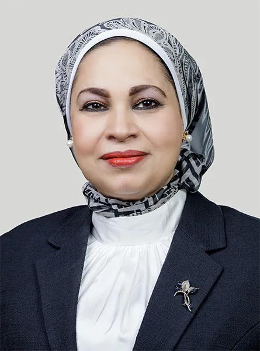
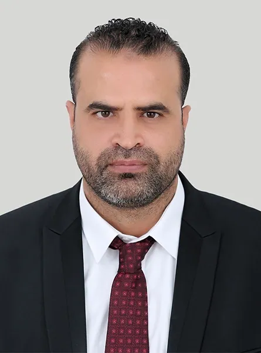
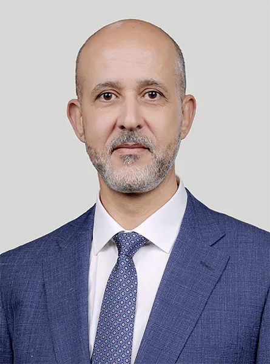
أ.د.لعبيدي بوعبداللهعميد كلية الآداب واللغاتكلية الآداب واللغات
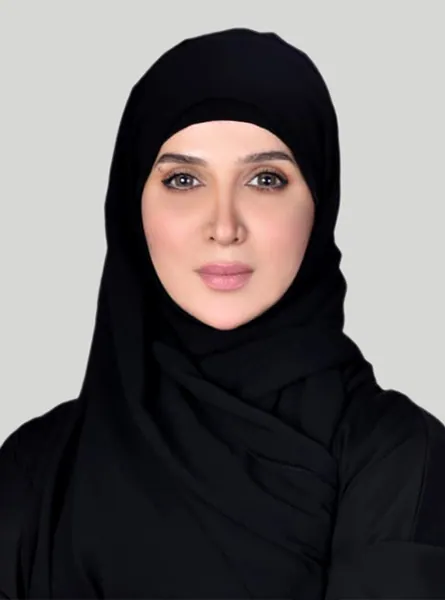
د. عائشة الشامسيرئيس قسم اللغة العربية وآدابهاكلية الآداب واللغات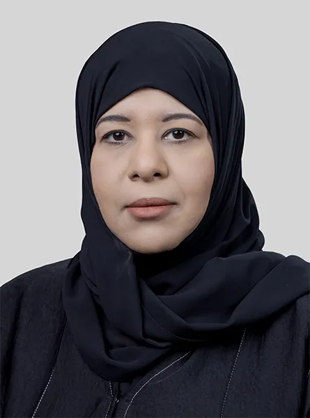
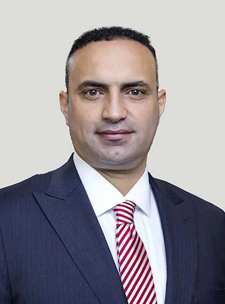
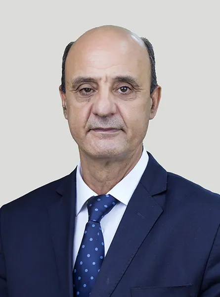
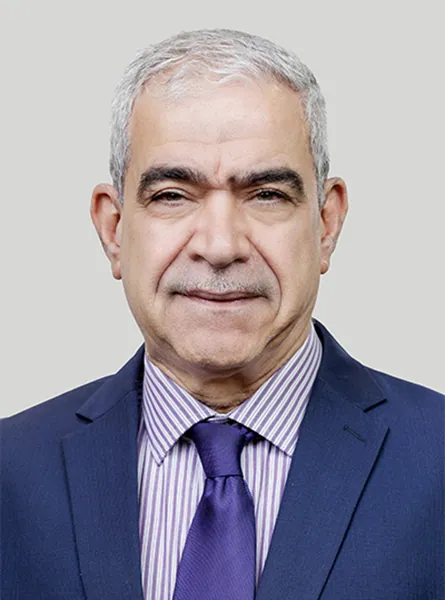
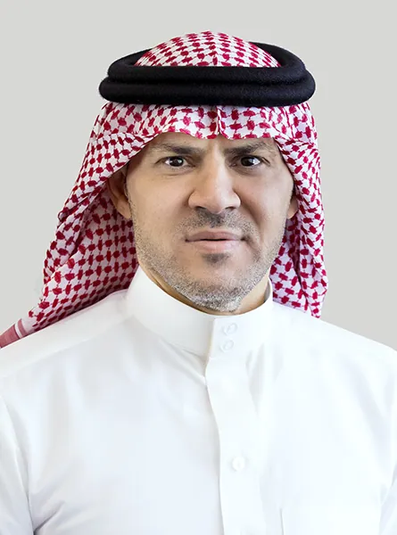
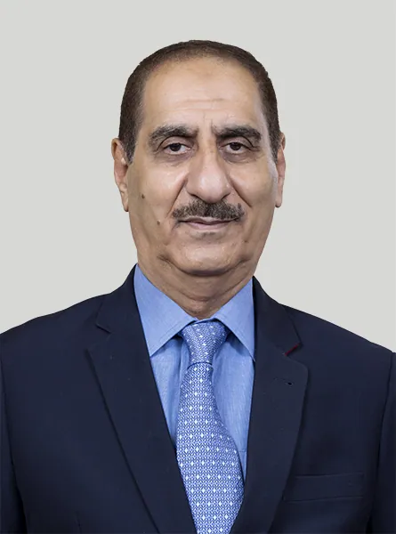
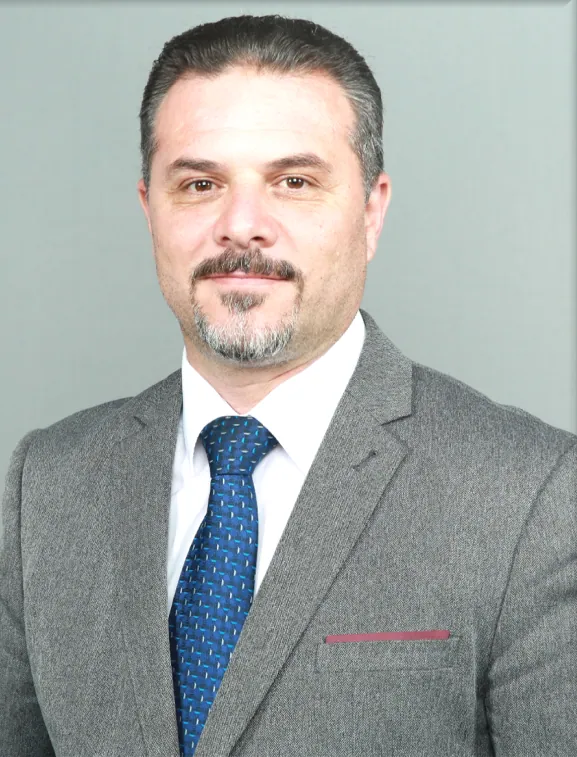
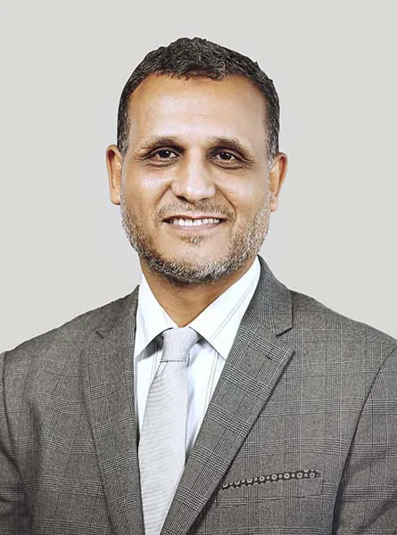

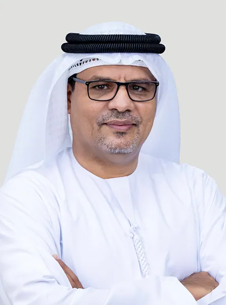
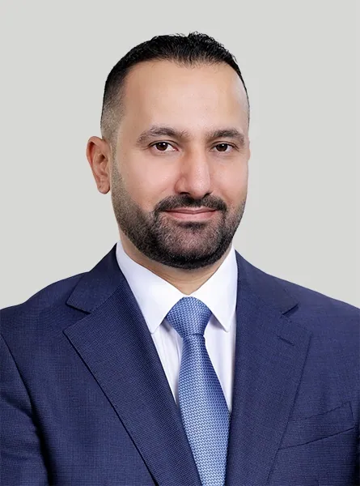
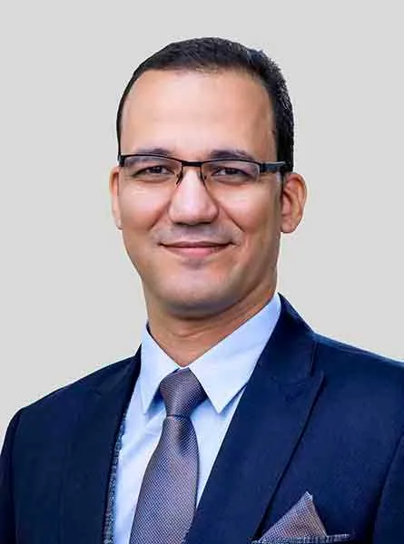
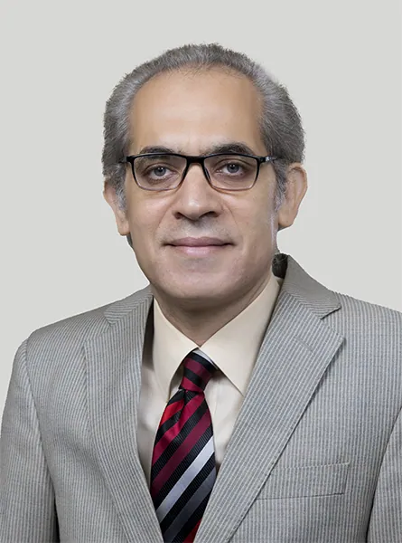
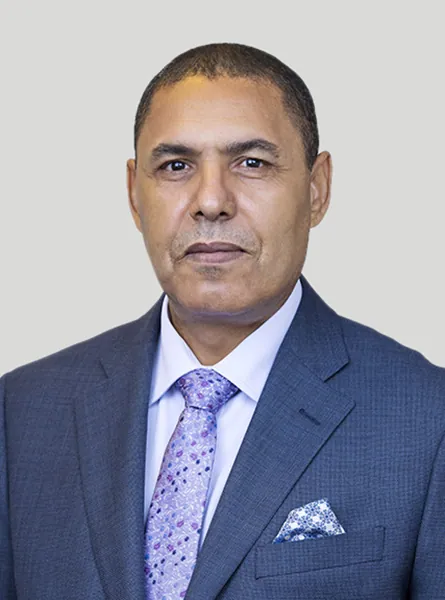
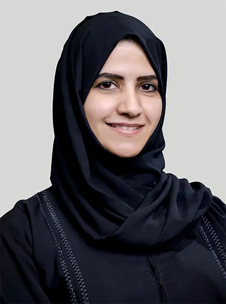
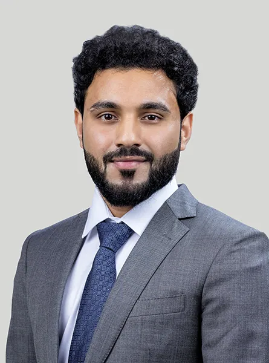
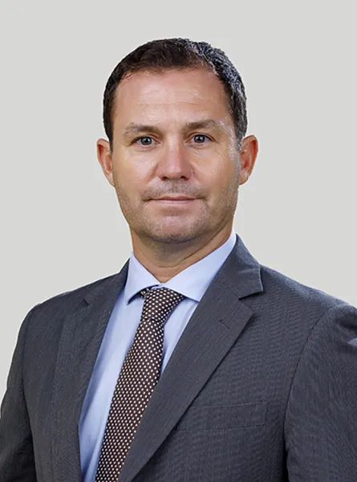
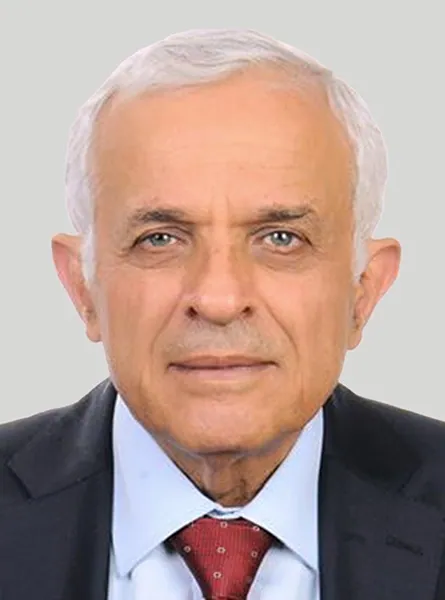
أ.د. رضوان السيدعميد كلية الدراسات العليا والبحث العلميكلية الدراسات العليا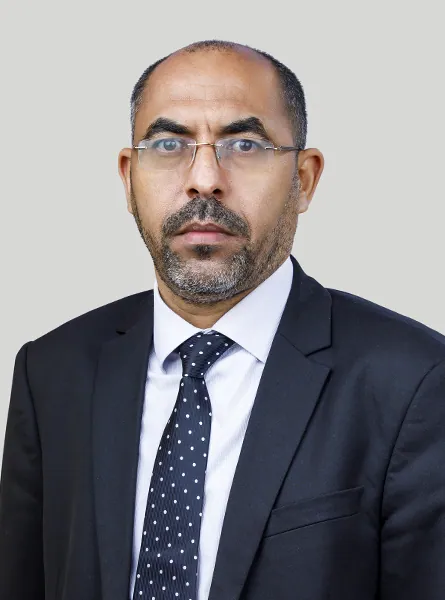
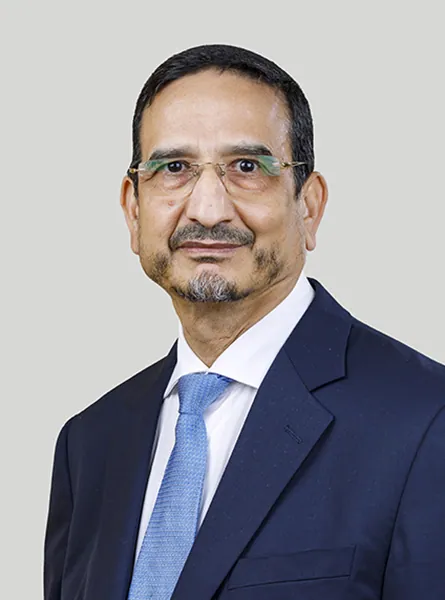
أ.د. الجلالي المرينيرئيس شعبة الدراسات العليا والبحث العلمي والابتكاركلية الدراسات العليا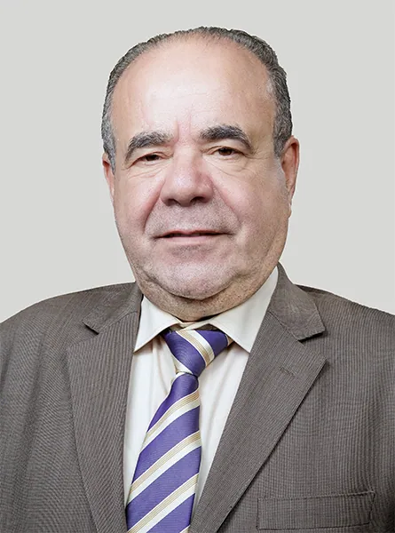
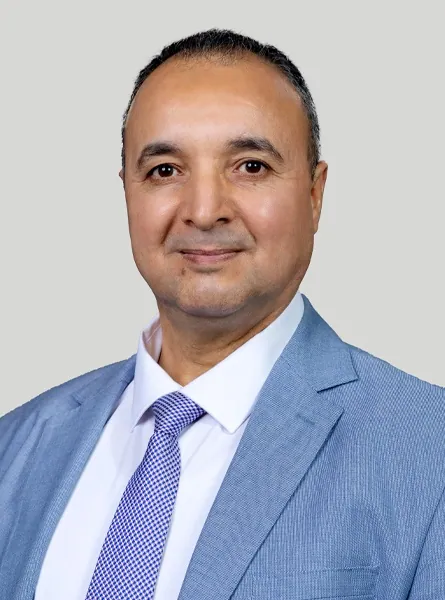
لا توجد نتائج مطابقة.
المصدر: قوائم أعضاء هيئة التدريس في صفحات الكليات على الموقع الرسمي (نُسخت في 6 أكتوبر 2026). الرتبة مستخرجة من اللقب المنشور.